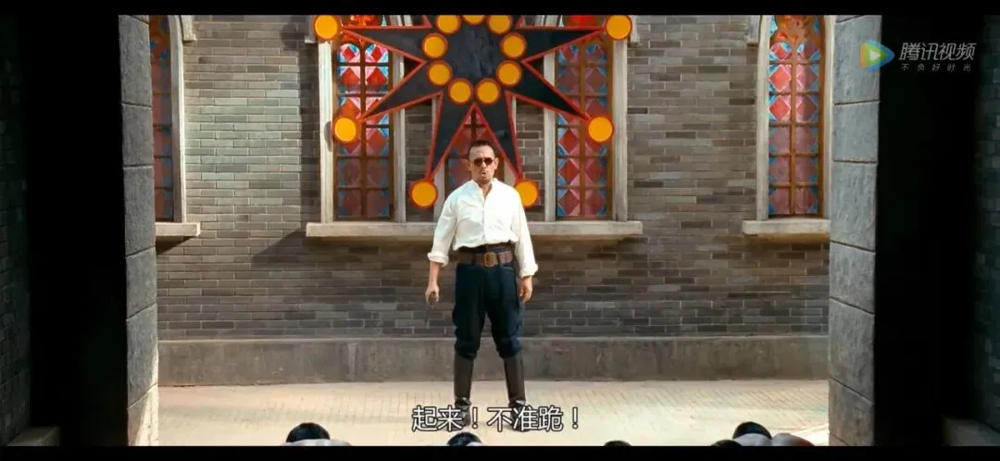

裁员如潮涌跳槽易跳坑
裁员如潮涌，跳槽易跳坑
凌晨，较随性，想到哪写到哪。
NO. 1｜壹
2019年，有人呼吁，理解黄其森，理解泰禾；2021年，又有人呼吁，理解许家印，理解恒大。
但我想，更应该呼吁的是：理解老百姓。
一个月没有发工资，多少人将遭受困顿？拖欠款项半年，多少中小企业将濒临绝境？房子烂尾一年，多少家庭的命运轨迹将被改变？
昨天，路过一房企的项目，一群农民工在拉横幅讨薪，与他们聊了聊，颇为感慨。有讨薪为缴子女上学费用的，有讨薪为救患病家人的，也有讨薪为让家人生活有个着落的。
谁来理解他们？
几千块钱，能改变一个家庭，却没人替他们站出来，本应更理解他们的声音，也如此微弱不可闻。互联网上有的，只是被充值的自媒体在那呼吁，要理解房企大佬们。
其实，就算企业倒了，也不影响大佬们继续保有百亿财富，他们有高超的财技和顶尖的智囊团，能将风险切割、财富保全。
黄其森通过一系列影子公司是如此，许家印通过离岸信托，亦是如此。
有人称，债务危机的房企资产万亿、土储巨大，卖一卖就能解决危机。这种明显外行人，他们不知道的是，那些所谓的土储，绝大部分还欠着巨额土地款。
有人拿着数千元的工资，却呼吁着要理解百亿富豪，被卖了还帮忙数钱，想来也是滑稽。好比拿着485元的年终奖，在网络舆情管理上一边删着同事们说的实话，一边帮公司粉饰、灌水、“辟谣”，不知内心作何感受。

赞歌听多了，即便听到温和的话都会觉得刺耳；溜须拍马的话听多了，遇到说实话的，会认为是黑。
大佬们的野心膨胀，千亿、多元化等皆是野心的具体化。成了，是能力强、手腕高、格局大.....败了，是要付出代价的。
我们（员工、业主、供应商、银行等），就是那个代价。大佬们的野心，风险却由社会来买单。
NO. 2｜贰
地产行业在调控的不断趋紧下，日子肉眼可见地愈发难过。于是，屠刀一举，裁员如潮涌，我们都成了代价。
此时此刻，有些人会觉醒，有些人依然自我安慰继续睡。
几年前的碧桂园，给行业做了一个非常坏的表率：优化不是裁员；将大量地产公司的员工调往集团机器人、农业等板块，就算离职，也不会算在地产公司头上；以区域合并调整行裁员之实。
裁员一般分为三类： 经济性裁员 (降低成本)、 结构性裁员 (战略转型)、 优化性裁员 (优胜劣汰)。碧桂园却将其统一归纳为优化，是个装糊涂的高手。
于是，后来其他的房企有样学样：
实地：大碧哥，你是知道我的，总裁要离职，只管辟谣就行；高管集体离职，公告称非集体离职，仅两人是自己辞职。
泰禾：大碧哥，你是知道我的，再困难也要装逼，先发个文章称不裁员不欠薪，哪怕后续与员工的劳动仲裁不断。万事不求人，自己信就好。
雅居乐：大碧哥，你是知道我的，总部和区域高比例裁员，把员工大量辞退，像你一样打着区域调整的旗号就成。
绿地：大碧，你是知道我的，我堂堂国企，裁员比例太高有失体面，对外宣称裁员比例不可能那么高，会影响公司正常运行，仅是少量裁员，属人员正常调整即可。
恒大：阿碧，我还没想好，如果是我出手，那么地产人应该瑟瑟发抖才对。
花样年、中南置地、合景泰富、海伦堡、禹洲、金科、万科、中梁、阳光城等一众房企强势围观，有样学样。
裁员潮由此浩浩荡荡，大幕开启，越来越多的地产人，成为公司的那个代价。
NO. 3｜叁
两年前，各家房企还在比拼校招。这家年薪20多万，那家87年做总裁.....
一派蒸蒸日上的气象、烈火烹油的场景。
彼时，即便资金困顿的房企，也敢站到各大名校，扯开嗓门公然挑肥拣瘦地挑选青年才俊。 007是常态，加班渐偏形式主义。
社招和校招的竞争白热化，遂有新版《让子弹飞》：
“生晚了！前几届毕业生把房企们的学历要求卷到硕士以上了，也就是TMD博士了，咱们来错时候了！”
“享受过福报吗？”
“没有”
“我告诉告诉你。毕业想进X房企，得双985，得007，自愿加班；得跪舔领导、得自愿跟投。你自愿了，才能让房企赚钱。得钱之后，房企的钱如数奉还，你创造的价值三七分成！”
“怎么才七成啊？”
“七成是人家的！能得三成还得看人家的脸色。”
“谁的脸色？”
“他。”
“他？！我努力了二十几年，就是为了看他的脸色？”
“对！”
“我好不容易考了个大学，又考了研。”
“对！”
“我还得双985”
“对！”
“我还得跪舔领导、自愿跟投”
“对！”
“还得‘自愿’TMD加班”
“对！”
“那我不成了跪着要饭的了吗？”
“那你要这么说，进X房企还真就是跪着要饭的。就这，多少人想跪还没这门子呢！”
“哎？这我就不明白了，我已经是个高材生了，怎么还不如在老家躺平啊？”
“百姓眼里，你是硕士。可是房企眼里，你就是跪着要饭的。工作嘛，饭碗，不寒碜。”
“寒碜！很TM寒碜！”
“那你是想站着，还是想工作？”
“我是想站着，还把工作找了！”
“找不成！”
“找不成？”
“找不成！”
“这个（尊严），能不能挣钱？”
“能挣，回家种地。”
“嗯。这个（学历），能不能挣钱？”
“能挣，跪着打工”。
“这个加上这个，能不能，站着把钱挣了？”
“敢问大哥何方神圣？”
“鄙人，百强房企打工人！”
当初的大肆喧嚣，广纳人杰；如今的大举屠刀，裁员汹汹，连校招生都裁。彼时彼刻，恰如此时此刻。
NO. 4｜肆
常有读者问起跳槽的事。
对地产人而言，找到不可取代的路径才是真功夫。 这 是陈腔滥调，但永不过时。
这几年，各行业的“T”型人才比较吃香。 “T型”人才，横向为知识拓展面，文化素质修养； 纵向为专业能力。
在职场上，跳槽是一件再普遍再正常不过的事情。有时跳槽能换来职位的高升、薪水的上涨，但有时候却只是从一个坑跳到了另一个坑而已。
2015-2019年，跳槽是最容易实现收入和职级跃升的途径，甚至没有之一。相比当时遍地机会，如今，跳槽更容易遇到坑。
跳槽变成跳坑，有两种情况，一种是80分的人，跳进了59分的地方；另一种是，只有59分的人，跳进了90分的地方。
在职业发展中，我们的收获其实有两份，一份是钱，一份是成长。当下的成长，在未来又能换成钱。 跳槽的目 的，是为了更好的职业发展。
什么时候可以考虑跳槽：
当工资被严重倒挂，职业发展速度遭遇瓶颈时，为加速打破天花板； 当成长被 倒挂时， 即将失去宝贵的时间和未来的潜力。
跳槽绝不应该是混不下去了才跳，反而应该是在高光时刻跳。即价值最大化。
跳槽，应深思熟虑，三思而后行。希望读者们都能有个好的前程和职业生涯。
凌晨三点半，对着电脑屏幕，有些话，就到此为止吧。
“时代的灰尘”，说出来轻松，压到自己身上才会体会到沉重如山；“不惜一切代价”，喊起来威武雄壮，最后才发现，我们就是那个代价。
按日期浏览全部来源（同日按条目标识排序）